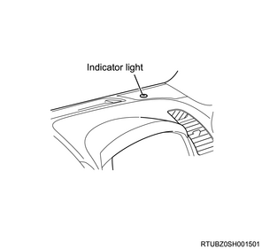

Function, structure, operation of security and locks control (Immobilizer)
1. Function, structure, operation of security and locks control
The immobilizer control system starts together with the ECM. The main system components are the ICU, the ECM, and the transponder key. The immobilizer system is activated (immobilized) by an incorrectly programmed or non-programmed transponder key, the ICU or the ECM. While this system is activated, the ECM controls the fuel injection system and the starter cut relay to prevent the engine from starting.
- Transponder key
- ICU
- Controller area network (CAN) communication bus line
- ECM
A typical engine starting sequence
1. When the ignition switch is ON, the ICU begins authentication of the transponder key in the steering lock. The ICU transmits a specific request signal to the transponder key and the transponder key sends back a response signal to the ICU. Both communication signals are carried out via antenna coil.
2. Because the anti-theft system alarms if a key or other methods unlock the door, when the transponder key is correctly authenticated the ICU transmits an alarm cancel signal to the BCM.
3. After the transponder key authentication is completed, the ICU begins authentication of the ECM. The ECM transmits a specific request signal to the ICU and the ICU sends back a response signal to the ECM. Both communication signals are carried out via a controller area network (CAN) communication bus.
4. After the ECM authentication is completed, the ECM enables engine running.
ICU
The ICU is installed to the steering lock. The ICU controls the immobilizer system through authentication of the transponder key with the ECM. The antenna coil is a part of the ICU and it is located around the steering key lock cylinder. The antenna coil is energized when the ICU is performing an authentication of the transponder key.
ECM
The ECM is installed next to the blower assembly. The ECM mainly controls the engine control and also communicates specific request signals and response signals with the ICU. If an immobilizer system problem occurs, the ECM sets a DTC and illuminates the SVS lamp or MIL.
- ECM
Transponder key
The transponder key accommodates a transponder chip in the grip portion. The transponder keys have no conventional power source. The transponder chip is energized via a radio wave supplied from an antenna coil fitted around the steering lock cylinder. Only the transponder key that is correctly programmed key is possible to start the engine. Maximum five transponder keys can be provided by additional programming.

- Transponder chip
Note
- Immobilizer control unit circuit diagram
Note
- ICU terminal layout
| No. | Pin function |
| 1 | Battery voltage |
| 2 | Not used |
| 3 | Ground |
| 4 | Not used |
| 5 | CAN high |
| 6 | CAN low |
| 7 | Not used |
| 8 | Not used |
| 9 | Ignition voltage |
| 10 | Not used |
| 11 | Not used |
| 12 | Not used |
Power door lock system
The power door lock system consists of a door lock switch, door lock key switch, door lock motor, and BCM. Battery voltage is consistently applied to the BCM. The BCM operates the door lock motor approximately 1 second after a door lock switch or door lock key switch signal input status change, and locks or unlocks the doors.
Locking
All doors will lock when the lock side of the door lock switch is pressed, or when the doors are locked using the key cylinder on the driver side.
Unlocking
All doors will unlock when the unlock side of the door lock switch is pressed, or when the doors are unlocked using the key cylinder on the driver side. If the key is used for unlocking when the anti-theft system is operating, the anti-theft alarm will sound until the remote controller key is used to unlock or the ignition switch is turned to the ON position.
Keyless entry
The keyless entry function performs the following functions.
Power door lock system
Lock and unlock functions by the remote controller key operation
Remote controller key registration function
Answer-back function
Interior light ON/OFF interlocking function
Ajar warning lamp function
The keyless entry system consists mainly of the following items.
Remote controller key
BCM
Receiver unit
The BCM transmits lock and unlock signals received from the remote controller key to the door lock actuator through the receiver unit for each door.
Lock and unlock
The following functions will operate when the lock button on the remote controller key is pressed.
Locking of all doors
Answer back, 1 blink
Interior light turns off
The following functions will operate when the unlock button on the remote controller key is pressed.
Unlocking of all doors
Answer back, 2 blinks
Interior light lighting
If doors are unlocked for approximately 30 seconds, they will be locked automatically.
Caution
- When performing door lock operations continuously using the remote controller key, wait for at least 1 second before performing the next locking or unlocking operation.
Remote controller key
The door can be locked or unlocked by operating the button within 10 meters {33 feet} around the vehicle. Only 1 remote controller can be used at a time. If 2 or more remote controllers are operated at the same time, their operation will be unstable due to radiowave interference.


Note
- Overview of the input/output of keyless entry
Note
- Installation position of the BCM

- BCM
Registration method of the remote controller key
Turn OFF the ignition switch and close all doors.
Open the door at the driver side.
Push the unlock button on the remote controller within 10 seconds.
Insert the key into the key cylinder within 10 seconds, turn ON the ignition switch, and then turn OFF the ignition switch within 10 seconds. Then, pull out the key.
Within 30 seconds, open and close the door in order to turn the door switch at the driver side ON more than 6 times. The door will be locked automatically at the sixth closing operation.
Push the unlock button more than 5 seconds on the remote controller within 5 seconds.
When registration is successful, 2 answer-backs are given.
If registration fails, no answer-back is given.
Caution
- If the ignition switch is turned ON or the door at the passenger side is opened, the registration will be canceled.
Anti-theft system
The anti-theft system consists of a BCM, anti-theft horn, anti-theft indicator light, receiver unit, and remote controller key. This system operates when the engine hood and all doors are closed and the doors are locked using a correctly programmed remote controller key. The system turns OFF when the doors are unlocked with the remote controller key or the ignition switch is turned ON.
The anti-theft system is designed to protect the vehicle and valuables from theft when the door and the engine hood of the vehicle are locked.
If anyone tries to open the door or the engine hood forcibly without using the remote controller key, the hazard lights flash and the horn sounds intermittently. The horn sounds for 30 seconds until the system stops automatically, and the hazard lights flash for 5 minutes.
Caution
- In order to operate the anti-theft function, use the remote controller key to lock the doors after closing all the doors.
- When the door at the passenger side is opened in locked status and then the door is closed, an error alert is detected.
Note
- The first 10 seconds
LED Lighting, Test, Switch delay ON
LED blinking rapidly (2 Hz), Door, Bonnet opening or system failure - Approximately 10 seconds later
LED blinking slow, System ON (0.5 Hz)

Activating the anti-theft system
Turn OFF the ignition switch.
Check that all the doors and engine hood are closed, and lock the doors with the remote controller key.
The anti-theft indicator light will illuminate for approximately 10 seconds, and the anti-theft system will be operated after the light changes to a slow flash.
Anti-theft system alarm operation conditions
The doors or engine hood is forcibly opened without the use of the remote controller key.
The doors are unlocked with the door lock knob.
The engine hood release handle is operated.
Anti-theft system stopping conditions
The doors are unlocked with the remote controller key or the ignition switch is turned ON.
If the alarm has sounded, it will stop once the ignition switch is turned ON.